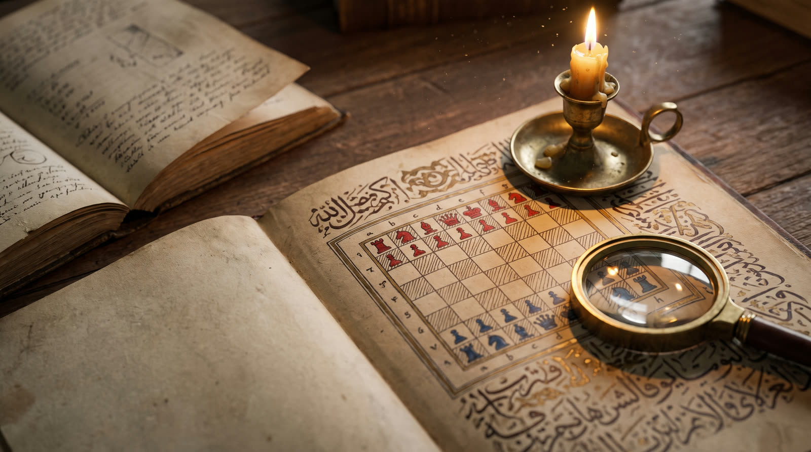

The London manuscript, MS 211
The only text from which we know the rules of great chess, and its road through India to London.

The library of the Royal Asiatic Society in London holds a Persian manuscript, Risala-i Shatranj, “A Treatise on Chess”, shelfmark MS 211. The catalogue dates it “probably 15th century”. 64 folios, naskh script at 15 lines a page, and many paintings of two scholars at chess. The leaves are out of order and some are water-damaged.
Besides the rules, the treatise discusses the “ten advantages of chess” and tells legends that great chess came first and the small game was devised later for a young Indian prince.
How it reached London
Inside the cover are the words “the gift of” and the names “H. Ross” and Robert Holford, the latter in Persian script. The chess historian Greg Myers traced the book’s road. Captain Hugh Ross of the East India Company collected Persian manuscripts and was killed in 1790 in the war against Tipu Sultan, leaving them by will to his friend David Price. After Price died, his widow gave 70 manuscripts, the treatise among them, to the Society in March 1836.
In 1854 the manuscript became No. 260, in 1892 today’s No. 211. In 1929 it was rebound in red leather and repaired.